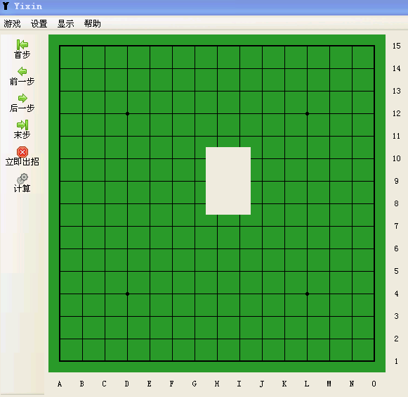

弈心五子棋 Yixin Gomoku/Renju
首页
五子棋交流
#1 弈心五子棋 Yixin Gomoku/Renju 作者：弈心五子棋 发表时间：2014-7-17 12:05:50
这是弈心
最后一次在爱五子棋网更新信息，弈心的最新信息（包括下载、贡献者名单等）会在
弈心主页中继续维护。
The is the last post updating Yixin's information in IWZQ, and information including download, contributors, etc.
Yixin's Page will continue maintaining Yixin's information in the future.
--------------------------------------------------------
弈心简介：
截至2014年7月，弈心是世界上最强的五子棋引擎。与黑石、Goro、连珠终结者等其它著名五子棋程序相比，弈心可以给出更为细致的分析，进而获得更有竞争力的着法。
Brief introduction to Yixin:
Up to July 2014, Yixin is a state-of-the-art Gomoku/Renju engine. Compared with famous gomoku/renju program Blackstone, Goro and Renjusolver, Yixin can give more comprehensive analysis and more competitive moves.
--------------------------------------------------------
FAQ:
Q: 为什么有这个帖子？
Q: 中文名是“弈心”还是“奕心”?
A: 弈心。百度百科词条有误（截至2014年7月）。
Q: 弈心免费吗？弈心开源吗？
Q: 安全软件报告弈心是病毒？
A: 在确认下载来源可靠，且电脑在安装弈心前未受病毒感染的前提下，请相信是安全软件误报。
Q: 如何联系作者？
--------------------------------------------------------
贡献者名单（截至2014年7月） Contributors
彼方 XR Hao Wu（吴豪） 雨中飞燕 Tuyen Do
Tianyi Hao（郝天一） 肥国乃乃 Saturn|Titan 元 TZ
舒自均 声依旧
［此帖子已被 弈心五子棋 在 2014-7-17 13:06:03 编辑过］
［ 无尽 于 2014-7-17 16:36:32 时奖励此帖[金币加 100 威望加1］
［ 平凡人生同学于 2014-7-18 5:30:44 时花20金币送鲜花一朵］
［ 平凡人生同学于 2014-7-18 5:30:44 时花20金币送鲜花一朵］
［ 平凡人生同学于 2014-7-18 5:30:44 时花20金币送鲜花一朵］
［ 平凡人生同学于 2014-7-18 5:30:44 时花20金币送鲜花一朵］
［ 平凡人生同学于 2014-7-18 5:30:44 时花20金币送鲜花一朵］
［ 鱼岛岛主同学于 2014-8-16 17:19:52 时花20金币送鲜花一朵］
［ 鱼岛岛主同学于 2014-8-16 17:19:52 时花20金币送鲜花一朵］
［ 鱼岛岛主同学于 2014-8-16 17:19:52 时花20金币送鲜花一朵］
［ 鱼岛岛主同学于 2014-8-16 17:19:52 时花20金币送鲜花一朵］
［ 鱼岛岛主同学于 2014-8-16 17:19:52 时花20金币送鲜花一朵］
［ 鱼岛岛主同学于 2014-8-16 17:19:52 时花20金币送鲜花一朵］
［ 鱼岛岛主同学于 2014-8-16 17:19:52 时花20金币送鲜花一朵］
［ 鱼岛岛主同学于 2014-8-16 17:19:52 时花20金币送鲜花一朵］
［ 鱼岛岛主同学于 2014-8-16 17:19:52 时花20金币送鲜花一朵］
［ 鱼岛岛主同学于 2014-8-16 17:19:52 时花20金币送鲜花一朵］
#2 Re:弈心五子棋 Yixin Gomoku/Renju 作者：自来水 发表时间：2014-7-18 6:48:33

#3 Re:弈心五子棋 Yixin Gomoku/Renju 作者：极地剑客 发表时间：2014-7-22 10:16:51
win764打开报错。xp3虚拟机跑到是正常。
楼主最强设置怎么搞，我反正开的最大，名人+谨慎5.
测试一下去
#4 Re:弈心五子棋 Yixin Gomoku/Renju 作者：弈心五子棋 发表时间：2014-7-22 11:59:25
通过与极地剑客邮件交流，
1. “win7 64报错”系安全软件误删引擎所致。
2. 对于版本≤0.4.7的引擎且版本≤1.2的界面：
(1) 建议棋风选择0（快棋）或1（慢棋）
(2) 计算时间越多棋力相应越强。计算时间的排序为：不限时≥名人≥九段≥六段≥四段≥三段≥二段≥一段。一般的，六段以上可能过慢，除非用于深度分析局面，否则六段以内即可。另外需要注意的是，除自定义等级外，段位对应的棋力与计算机配置无关。
［此帖子已被 弈心五子棋 在 2014-7-22 12:00:44 编辑过］
#5 Re:弈心五子棋 Yixin Gomoku/Renju 作者：平凡人生 发表时间：2014-7-22 12:50:55
什么原因。
#6 Re:平凡人生【==Re:弈心五子棋 Yixin Gomoku/Renju==】 作者：弈心五子棋 发表时间：2014-7-22 13:43:35
>>平凡人生关于棋子显示为白格的问题
这是一个老版本界面的问题：
对于版本≤1.0的界面，若采用16位增强色，则会出现该问题（软件的README中已说明硬件要求32位真彩色）。
#7 Re:弈心五子棋 Yixin Gomoku/Renju 作者：平凡人生 发表时间：2014-7-22 19:14:30
谢谢
#8 Re:弈心五子棋 Yixin Gomoku/Renju 作者：不明飞行物 发表时间：2014-7-28 21:32:51
2014的版本很好用
#9 Re:弈心五子棋 Yixin Gomoku/Renju 作者：西决 发表时间：2014-8-15 16:55:59
界面的特棒，看着相当舒服，好顶赞啊
--------来自萌萌哒西决